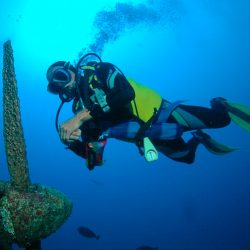
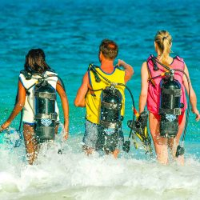

The island is situated in an area with t a good water depth thus making diving one of its
major activities here. We have highly experienced staff who accompany our guests as they set
to the explore the depths of the ocean.


Watersports
A wide range of watersports are available at our daily program, the include: